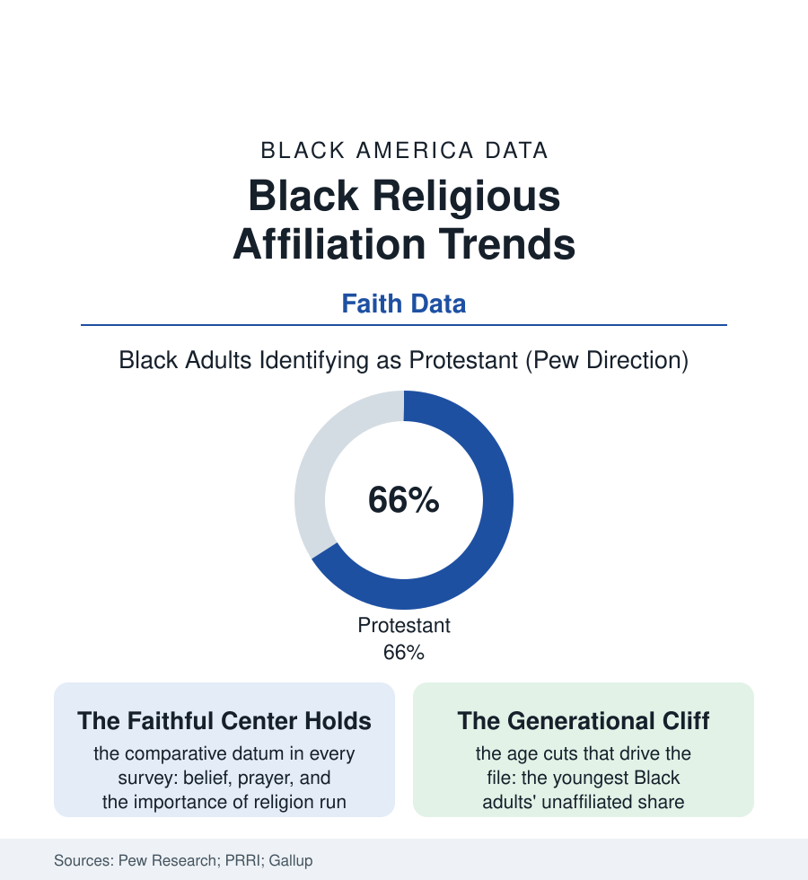

Black Census
The Pew and the Emptying Pew: Black Religious Affiliation in the Data
Black America remains the most religious major population in the country — and its young are disaffiliating at the fastest rate in its history. Both sentences are in the same survey. The affiliation file.

The survey houses agree on the headline of Black religion in America: no major population believes more, prays more, or rates faith more central than this one. The same surveys' trend lines carry the second headline: the share of Black adults claiming no religious affiliation has climbed into the fifth-of-the-population range and is concentrated, with demographic inevitability, among the young. This article reads the affiliation file — the census of the spirit itself, taken by pollsters. The file reads accordingly.
The Center and Its Edges
The composition data first: the historically Black Protestant traditions — Baptist, Methodist, Pentecostal in their Black denominational families — still hold the population's center in the Pew landscape (roughly two-thirds of Black adults Protestant by affiliation, the Black Protestant share of all American Protestants far above the population's), the Catholic share a regional river running through Louisiana and the old northern parishes, the Muslim community — its Black American core the faith's American foundation, its immigrant congregations beside — the Jehovah's Witnesses' notable Black share, and the small, ancient shelves (the Hebrew Israelite congregations, the Black Jewish communities, the African-diaspora traditions of the Gulf and the coasts) that the big surveys flatten into 'other.' Around the composition stands the practice data that make the population the country's religious benchmark in the pollsters' own cross-tabs: the prayer frequency, the scripture reading, the 'religion very important' rows — Black women at the summit of every measure the surveys publish, the grandmother effect quantified. And inside the affiliated, the landscape's subtler currents run: the denominational drift from the historic families toward the nondenominational (the landscape studies' fastest-growing Black category within Christianity — the storefront's grandchildren in the multisite era), the megachurch file's pull, the tradition-switching of the marriage and migration files, affiliation loosening its denominational specificity while holding its identity — the pattern the sociologists read as the American grain asserting itself inside the church that segregation built as a fortress.
The Young and the Unaffiliated
The trend lines are the file's live wire: the unaffiliated share of Black adults roughly doubling across the survey era, its age gradient the steepest datum in the file — the youngest cohorts' 'nones' running at two to three times the elders' rate, the transmission machinery (the childhood religious socialization that predicted adult affiliation across a century of data) posting its first sustained slippage in the panel studies. The surveys' probes into the reasons complicate every simple story: the disaffiliating young's answers cite the institution's credibility files (the scandals, the politics, the prosperity file's excesses), the science-and-faith framings, the simple drift of the unchurched childhood — and, in the qualitative record's distinctive Black register, the church hurt archive and the judgment files — alongside the finding that complicates the word 'secularization' itself: the unaffiliated Black young's belief measures (the private prayer, the spirituality items, the ancestors-and-energy vernacular of the culture file) running far above their white counterparts', affiliation falling faster than faith. The institutions are responding in the data's visible ways — the campus ministries and the young-adult plants, the digital church's Black vanguard, the denominations' own commissioned studies reading their age pyramids like weather — while the demography does its slow arithmetic: a population whose elders remain the most churched in America is raising the least churched generation in its recorded history, and both generations are, by every measure in this file, telling the truth about themselves. What the affiliation file finally measures is the difference between a people and its institutions: the faith that survived the hold and the plantation chapel was never, at bottom, the denomination's property — a distinction the young, in the surveys' own verbatims, appear to be drawing for themselves.
Reading the Affiliation Data
The affiliation file is the census section's soul-count: the most religious population in the country becoming, at its young edge, something the pollsters lack a clean name for. Pew publishes the shares. The grandmothers publish the counter-data every Sunday — and the file notes, with respect, that both datasets are longitudinal. The pew is emptier than it was. The praying, by the pollsters' own instruments, has barely moved at all.
More in Black Census
The Black Population of the United States: Size, Definitions, and Distribution
The Black population of the United States totals 52.8 million — 15.4 percent of the nation. How the Census Bureau defines and counts the population, and where it lives.
Black Median Household Income in the United States
Black median household income stands at $56,490 in the Census Bureau's annual income report — how the figure is measured, how it compares, and what drives it.
The Black Poverty Rate: Levels, Children, and the Long Trend
The official Black poverty rate is 17.1 percent — against 11.1 percent nationally and 7.7 percent for non-Hispanic White Americans. How poverty is measured and what the data show.
Source: Pew Research Center Religious Landscape Studies and Black religion surveys; PRRI Census of American Religion; Gallup religiosity data.